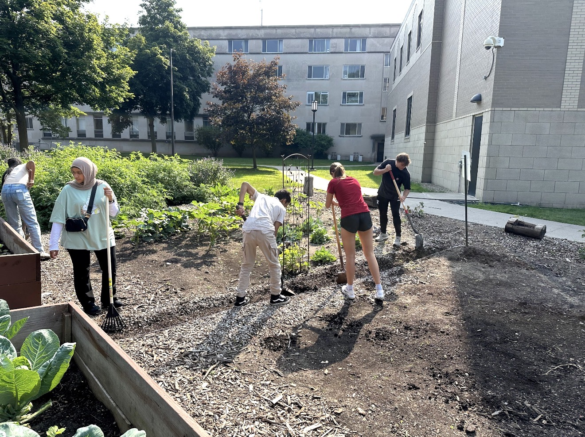
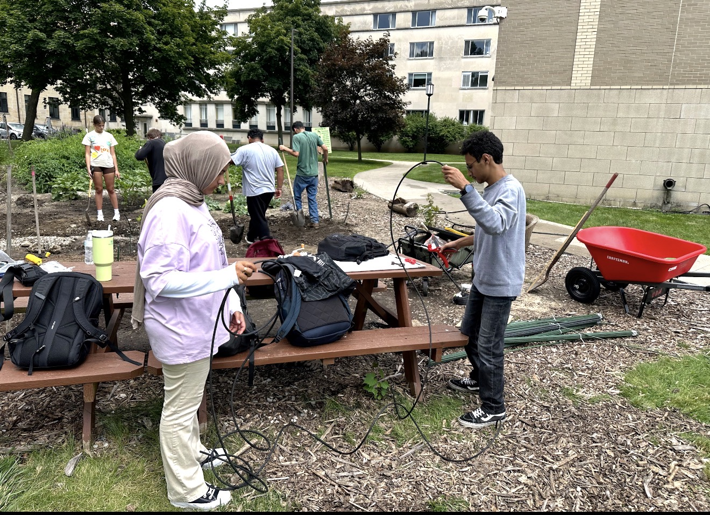
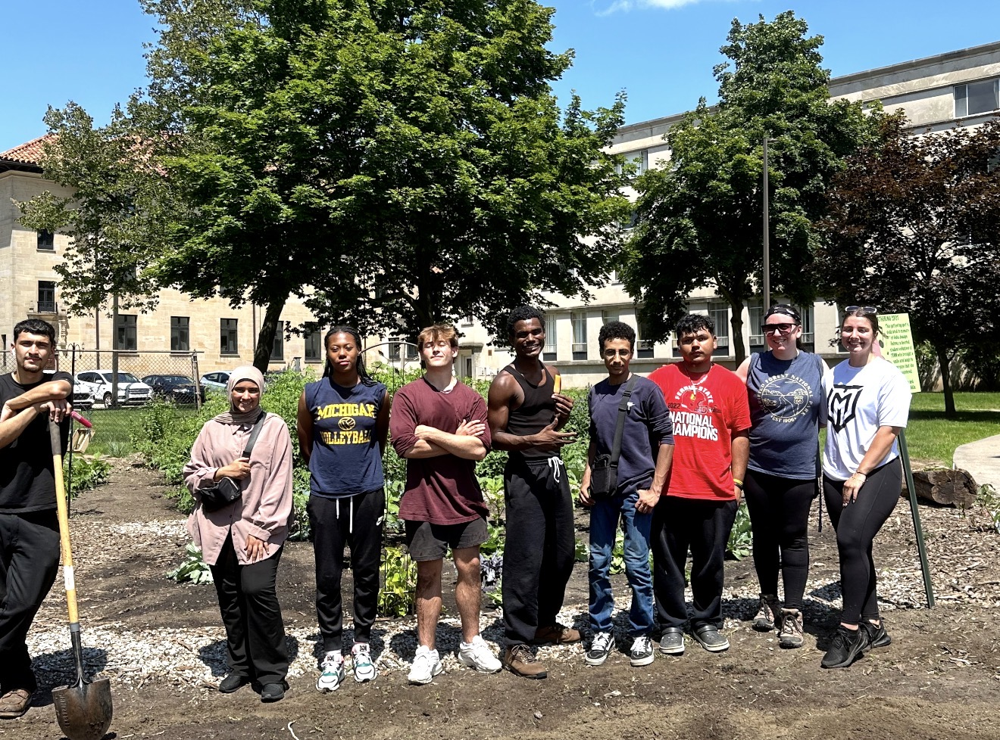
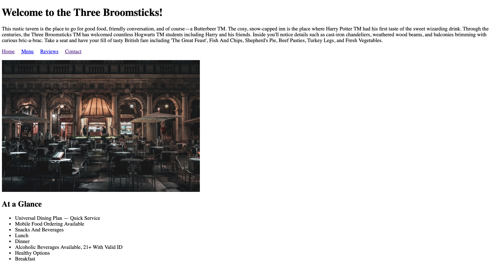
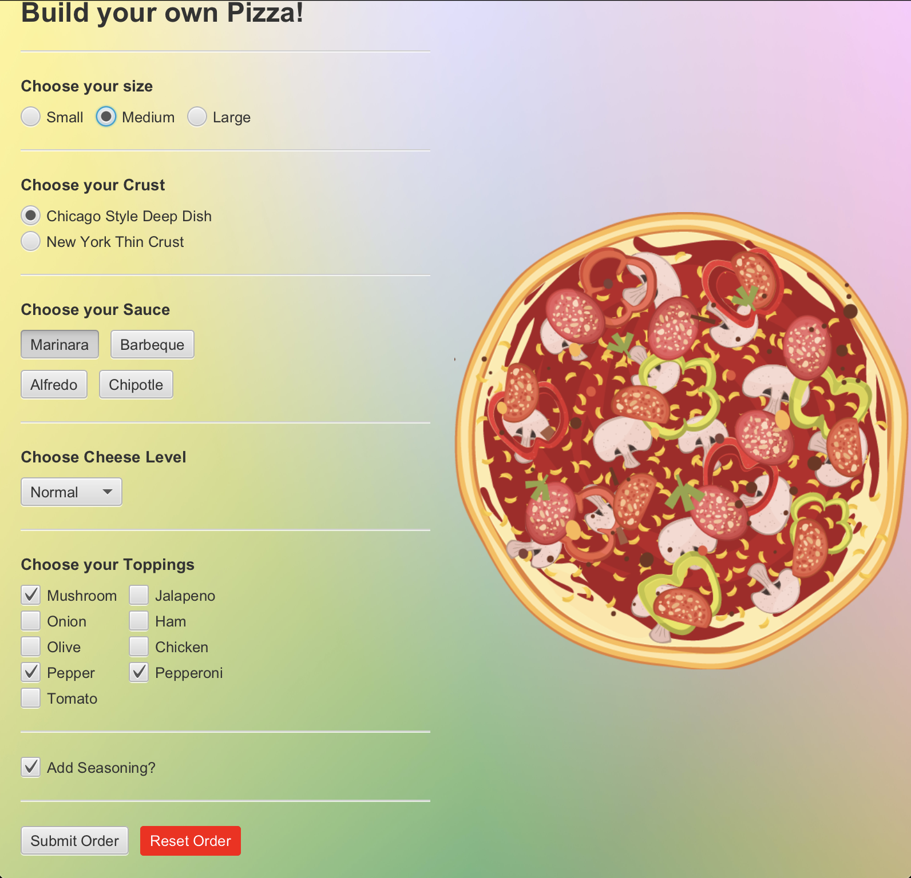

Irrigation System Development - TENN Garden
Overview
As part of a volunteer initiative at my university, I contributed to the development
and setup of an irrigation system for the TENN Garden. The goal of this project was to
create an efficient and sustainable way to maintain plant health while reducing manual
labor and water waste. This experience allowed me to apply engineering concepts in a
hands-on environment and understand how physical systems are designed and implemented.
Skills Demonstrated
- Problem-solving in real-world, unstructured environments
- Basic system design and understanding of fluid distribution
- Collaboration and teamwork in a volunteer setting
- Adaptability when working with physical components and constraints
Reflection
This project taught me how to approach open-ended problems that do not have a single
correct answer. I learned the importance of planning, testing, and adjusting designs
based on real-world limitations. It also reinforced my interest in combining Electrical
Engineering and Computer Science to build systems that are both efficient and impactful.
Project Visuals



Wizarding Restaurant Website
Overview
I developed a themed restaurant website as part of a web development project,
focusing on creating an engaging and functional user experience. The goal was
to design a visually appealing site while implementing core front-end development
concepts such as structured layout, navigation, and responsive design.
Technologies Used
- HTML for structuring content
- CSS for styling and layout design
- Basic web design principles for usability and responsiveness
Key Features
- Multi-page navigation (Home, Menu, Contact, etc.)
- Themed design with consistent styling
- User-friendly layout and organization of content
Reflection
This project strengthened my understanding of front-end development and the
importance of designing for both functionality and user experience.
It also helped me improve my attention to detail and ability to translate
creative ideas into working code.

View on GitHub
Java Pizza Ordering Application
Overview
This project is a Java-based console application designed to simulate a simple pizza ordering system.
Users can select pizza sizes, choose toppings, and view a final order summary.
The goal of this project was to strengthen my understanding of object-oriented programming and
practice building interactive programs that respond to user input in a structured way.
Key Skills & Concepts
- Object-oriented programming using classes and methods
- User input handling and program flow control in Java
- Problem-solving through structured logic and decision-making
Professional Reflection
Through this project, I improved my ability to design programs that are both functional and easy to navigate.
I learned how to break down a real-world process into smaller components and translate it into code.
These skills are directly relevant to my future goal of becoming an electrical engineer, where
structured problem-solving and system design are essential when working with complex technical systems.

View on GitHub